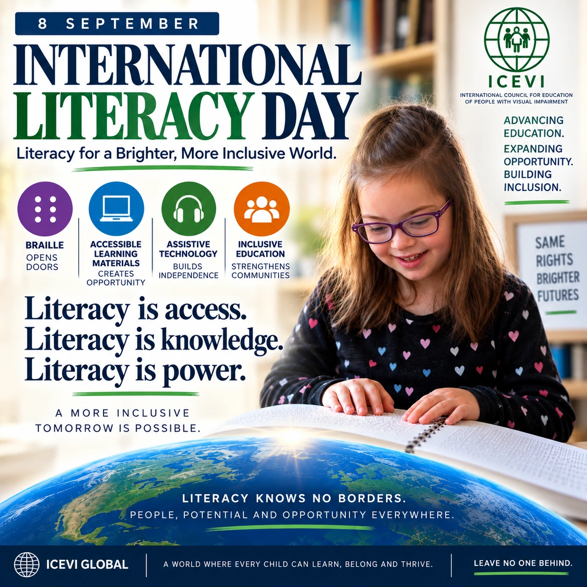

Read the graphic’s message as text
International Literacy Day. 8 September. Literacy for a brighter, more inclusive world. Braille opens doors. Accessible learning materials create opportunity. Assistive technology builds bridges. Inclusive education strengthens communities. Literacy is access. Literacy is knowledge. Literacy is power. A more inclusive tomorrow is possible. Literacy knows no borders. People, potential and opportunity everywhere.
Today is International Literacy Day. And for those of us in the blind and low vision community, literacy has to mean much more than simply being able to read words on a page.
Literacy is access. Literacy is knowledge. Literacy is power.
For a blind or low vision student, literacy may mean Braille. It may mean tactile graphics, accessible digital content, screen readers, magnification, refreshable Braille displays, or emerging technologies like multiline Braille. But the technology alone isn’t enough.
A student needs instruction, access, opportunity and high expectations.
That is why I appreciate the work of ICEVI Global—the International Council for Education of People with Visual Impairment. Their work helps advance education and literacy for children and young people with visual impairments around the world.
As a parent, I’ve learned something else along this journey: Access delayed is education denied.
A blind student shouldn’t get the textbook three weeks after everyone else. They shouldn’t have to fail with print before someone considers Braille. They shouldn’t be physically included in a classroom while being functionally excluded from the information everyone else can access.
And we shouldn’t measure success by whether we managed to accommodate a student. We should measure it by whether we gave that student the tools to compete, participate, create, lead and choose their own future.
Today, on International Literacy Day, I hope educators, policymakers, families, technology developers and disability advocates will ask a very simple question: Does every blind and low vision student have timely access to the literacy tools they need to participate on equal terms?
If the answer is no, our work isn’t finished. More Braille. More accessible information. More technology. More opportunity. Higher expectations.
Because literacy doesn’t just open books. It opens the world.